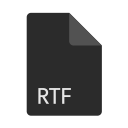
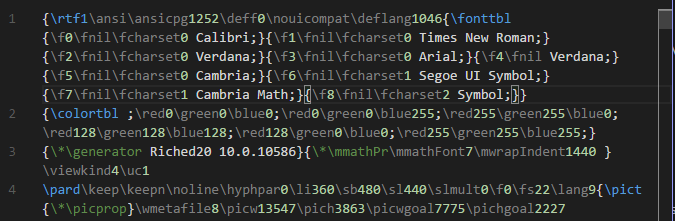

Broader reach, same simple highlighting
RTF now runs in more places, from the browser to remote and untrusted workspaces, while keeping the same lightweight syntax support.

RTFVisual Studio Code Extension
RTF adds language support for Rich Text Format files in VS Code, with syntax highlighting and bracket matching based on the RTF specification, so control words and groups are easy to read.
.rtf files
What's new in 2.8
RTF now runs in more places, from the browser to remote and untrusted workspaces, while keeping the same lightweight syntax support.
Features
Syntax highlighting
RTF registers the .rtf file extension and applies a TextMate grammar built on the
RTF Specification version 1.9.1,
highlighting control words, control symbols, groups, and plain text.
Files with the .rtf extension are automatically associated with the RTF language.
Remote development ready
.rtf files.rtf files hosted on the remote machineFAQ
Any file with the .rtf extension is automatically recognized and highlighted using the RTF language grammar.
The grammar follows the structure defined in the RTF Specification version 1.9.1, covering control words, control symbols, and groups.
Yes! RTF ships a dedicated web bundle, so syntax highlighting works in browser-based VS Code environments too.
Yes! RTF supports Remote Development (SSH, Containers, WSL), Workspace Trust, and Virtual Workspaces, so highlighting works consistently wherever your files live.
Yes! It works on all VS Code forks, ensuring compatibility and seamless integration with your favorite tools.
If you have a feature request, bug report, or suggestion, please submit it through our GitHub Issues page. We appreciate your feedback!
If you have a question that's not covered in the FAQ, feel free to reach out through our support channels at GitHub Discussions. We're here to help!
Donate
RTF is open source, and your support helps keep maintenance, improvements, and ecosystem compatibility moving forward.